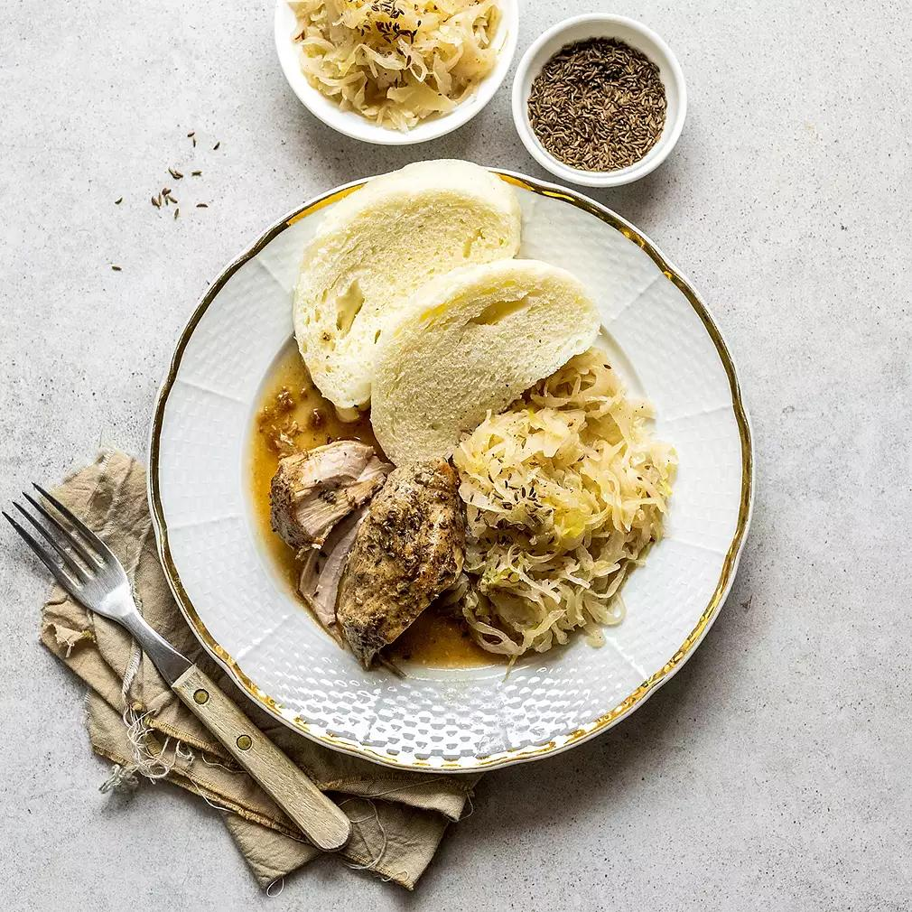
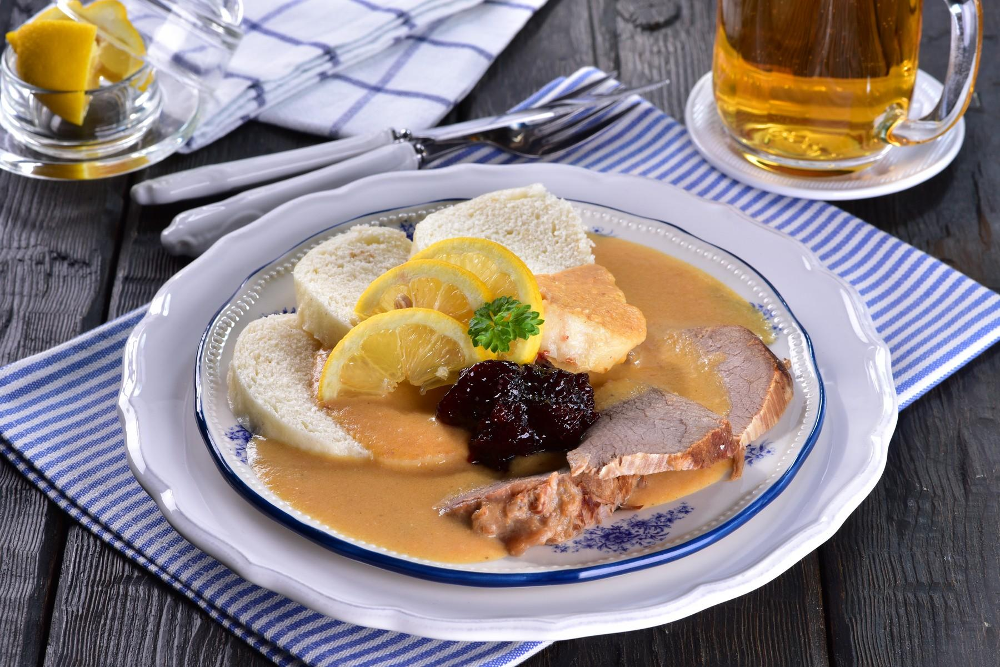
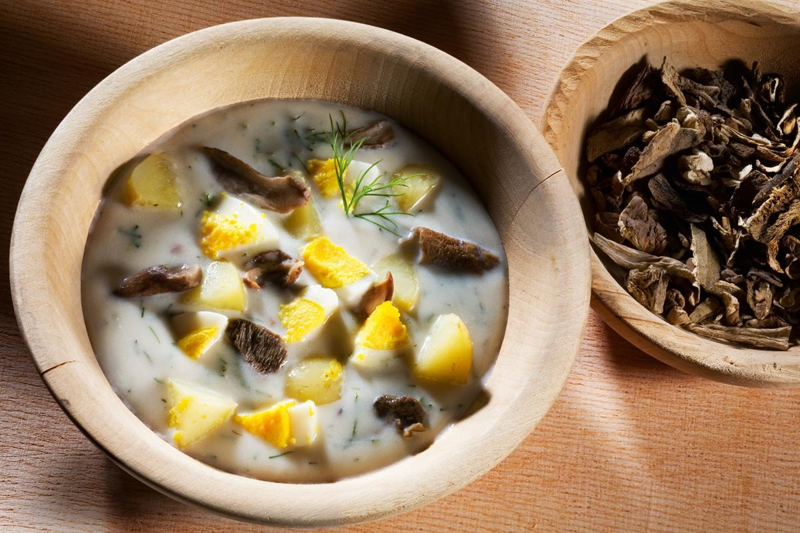
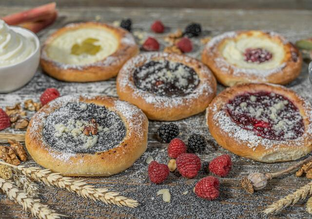
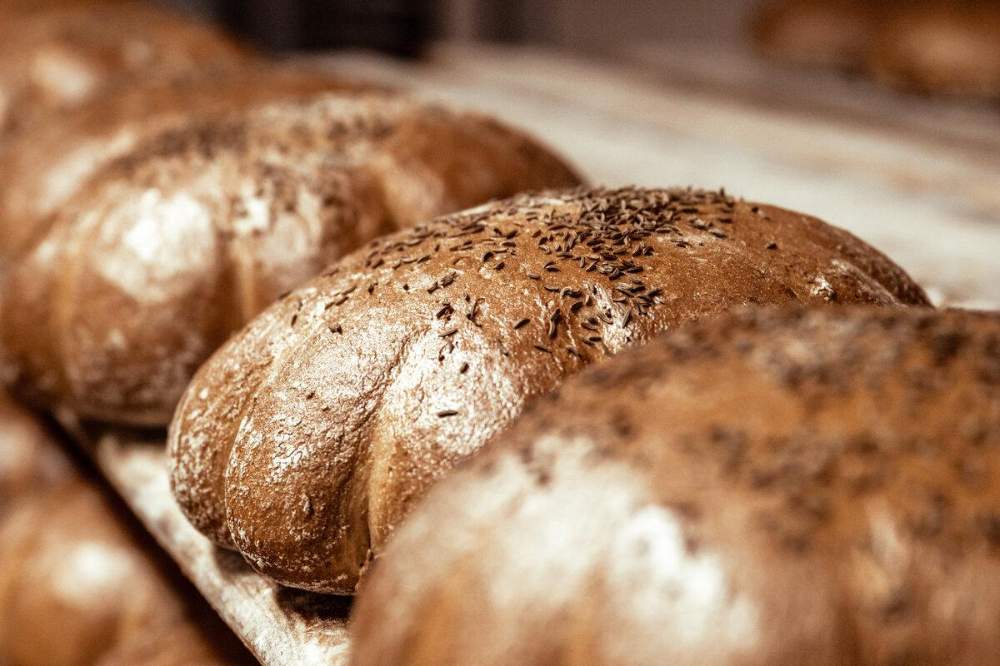
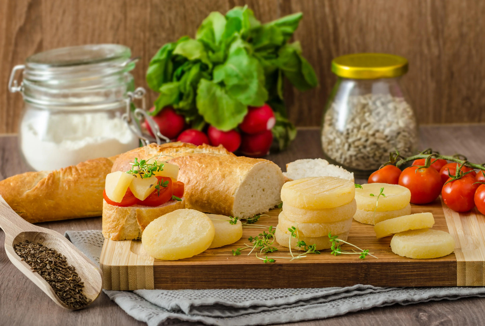
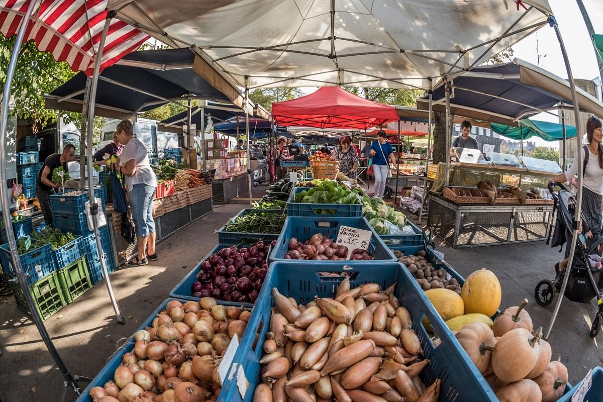

Traditional Czech Dishes
Classic Czech meals include svíčková with creamy sauce and dumplings, roast pork with sauerkraut and dumplings, and hearty goulash. These filling dishes are an important part of the country's culinary heritage.

Discover the flavours of Czechia, from traditional recipes and regional specialities to sweet pastries and local food traditions.
Czech cuisine is shaped by centuries of tradition, regional ingredients and family recipes. From hearty meals and traditional soups to homemade pastries and sweet desserts, food plays an important role in Czech culture. Every region has its own specialities and culinary traditions worth discovering.
Explore the dishes, ingredients and food traditions that make Czech cuisine unique. From classic recipes passed down through generations to regional specialities, Czech food offers a taste of the country's history and culture.

Classic Czech meals include svíčková with creamy sauce and dumplings, roast pork with sauerkraut and dumplings, and hearty goulash. These filling dishes are an important part of the country's culinary heritage.

Soups are an important part of traditional Czech meals. Popular examples include kulajda, a creamy soup with mushrooms and dill, and česnečka, a garlic soup often served with croutons.

Czechia has a rich tradition of sweet baking. Popular treats include fruit-filled koláče, sweet buchty and traditional cakes prepared for family celebrations and special occasions.

Bread is a staple of Czech cuisine, with many varieties of traditional rye and wheat loaves. Fresh rolls, homemade bread and baked goods are part of everyday life in Czech households and bakeries.

Every Czech region has its own culinary specialities. Examples include Olomoucké tvarůžky cheese from Moravia, South Bohemian fish dishes and traditional Wallachian recipes from the east of the country.

Farmers' markets and seasonal food fairs bring local producers and visitors together. Traditional Christmas markets, harvest celebrations and regional festivals are also an important part of Czech food culture.
Czech cuisine is more than a collection of traditional recipes. It reflects the country's history, regional identity and family traditions. Whether enjoyed at a local restaurant, a traditional bakery or a family table, Czech food offers a genuine taste of the country's culture and hospitality.